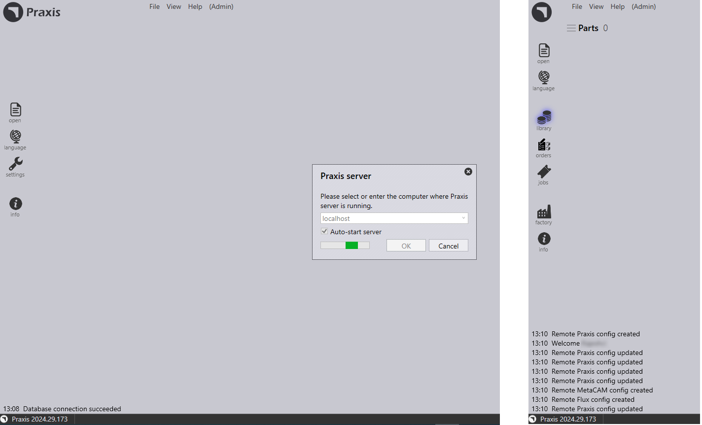

Serverinstallation
Följ instruktionerna för att installera TruSmartCAM Serverinstallation tillsammans med SQL.
|
Administratörsrättigheter
För att utföra denna installation måste användaren ha administratörsbehörighet. |
-
Kör Setup.TruSmartCAM.<version>.exe för att påbörja installationen.
| Version är ett nummer. |
-
Läs licensavtalet och välj I accept the agreement och klicka sedan på Nästa .

Steg 1 : Installationsplats
-
Ange installationskatalogen eller acceptera installationens standardsökväg
C:\Program Files\Metamation\Praxisoch klicka Nästa.-
C:\Program Files\Metamation\Praxis- Installationsmappen kommer att ha följande mappar: Bin, MetaCAM, Samples och Tracker. -
C:\Program Data\Metamation- Datamappen kommer att ha följande mappar: TruSmartCAM, TecZone och MetaCAM.
-

Steg 2 : Val av komponenter
| Installationstyp | Komponenter |
|---|---|
Full |
Server + Skrivbordsklient + Engine |
Client |
Skrivbordsklient |
Server |
Server + Skrivbordsklient |
Station |
Väljer alla stationsterminaler som TecZone, MetaCAM, RightAngle(Bend Controller), Vulcan(Laser Machine Controller) |
Custom |
Väljs av användaren. |
-
Välj Fullständig installation. Välj Code Senders och Bend Code Senders från TruSmartCAM Tools. Nu ändras installationstypen till Anpassad. Klicka Nästa.

Steg 3 : Välj Installera SQL Server
|
SQL Express 2022-installation behövs endast för TruSmartCAM Server. Detta alternativ är inte tillgängligt för Klient- och Sync-installationer. Detta är också markerat ON och installerat för första gången och kan ignoreras därefter. Om SQL redan är installerat på TruSmartCAM-servern kan användaren ignorera Steg 3. |
-
I Välj ytterligare uppgifter: Klicka Install SQL Express och klicka Nästa.
-
I Redo att installera: Sammanfatta alla installationsfunktioner och klicka Install.

Steg 4 : SQL Server-installation
När TruSmartCAM-komponenterna är installerade fortsätter installationsprogrammet med SQL server-installationen. Acceptera licensavtalet för att fortsätta och installera SQL express med standardalternativen.

När installationen är klar klicka Close och slutför installationen.

| Beroende på Windows-versionen kan stängning av SQL-installationen uppmana till en omstart. |
Steg 5 : Windows skrivbordsgenvägar
-
Efter SQL-installation, om systemet inte startar om, välj kryssrutan Launch TruSmartCAM och klicka Finish.
-
Om systemet startar om, starta TruSmartCAM-genvägsikonen på skrivbordet eller skriv TruSmartCAM i Windows Start Program och Kör som administratör.
| Serverinstallation : TruSmartCAM och TruSmartCAM License-genvägsikoner är tillgängliga på skrivbordet. + Klient/SYNC-installation : Endast TruSmartCAM-genvägsikon tillgänglig på skrivbordet. |

Steg 6 : Licensregistrering
-
I fältet Serial Number skriver ni den TruSmartCAM seriell nyckel som tillhandahållits av Trumpf Metamation Service Team. Skriv <Företagsnamn> i fältet "Registered to" och e-post. Klicka OK.

|
I fall nätverkets brandvägg blockerar licensregistreringen eller om det inte finns internet på TruSmartCAM Server-datorn, görs TruSmartCAM-licensieringen genom offlineaktivering. Maila Prax.request från C:\ProgramData\Metamation\Praxis mappen till Trumpf Metamation Service Team. Trumpf Metamation Team kommer att tillhandahålla Prax.lock som behöver placeras i denna mapp. |
Steg 7 : Initial engångskonfiguration
-
Skriv databasnamn och ställ in datalagringsplats. Välj Använd SQL-server kryssrutan och välj SQL-servernamnet för att ansluta till databasen. Klicka OK.

-
TruSmartCAM skrivbordsklient öppnas och visar Database Connection Succeeded längst ner.
-
TruSmartCAM, TecZone och MetaCAM konfigurationsfiler skapades med standardkonfigurationsmaskiner eller mot TruSmartCAM licensmaskiner. Samma konfiguration kommer att delas över alla TruSmartCAM Klienter.

Välkomstskärmen visas med Windows User LoginName som TruSmartCAM Login och Name. Första TruSmartCAM användaren betraktas som Platsadministratör. Ange e-post och lösenord. Klicka OK .
Välj kryssrutan Kom ihåg mig för att spara inloggningsuppgifterna för nästa gång. Avmarkera kryssrutan Kom ihåg mig kommer att uppmana till inloggnings- och lösenordsdialogruta varje gång TruSmartCAM-applikationen startas.

Steg 8 : TruSmartCAM inloggning
-
Stäng TruSmartCAM och öppna det igen. Systemet uppmanar er att ange TruSmartCAM inloggningsuppgifter.

-
Det inloggade användarnamnet visas bredvid användarikonen i TruSmartCAM applikationshuvudet.

-
När ni håller muspekaren över användarikonen visar systemet:

-
Användarrollen (till exempel: Programmer, Admin).
-
En genväg för att logga ut: Ctrl+L.
-
-
Genom att klicka på användarikonen öppnas en meny som gör att ni kan:

-
Redigera information… - Uppdatera era profildetaljer.
-
Ändra lösenord… - Ändra ert kontolösenord.
-
Logga ut - Logga ut från applikationen.
-
Avbryt - Stäng menyn utan att göra några ändringar.
-
Steg 9 : Fabriksmaskinkonfiguration
-
TruSmartCAM Licens [Alla maskiner aktiverar licensbit] : Standard TruSmartCAM maskin och material betraktas som fabrikskonfiguration.
-
TruSmartCAM Licens [Ingen demo och få maskinbitar aktiverade] : Dessa få maskiner och standardmaterial betraktas som fabrikskonfiguration.
-
(Öppna → Importera) en ny del från
C:\Program Files\Metamation\Praxis\Samples\Partsoch verifiera om delen importeras framgångsrikt.

Not 1 : TruSmartCAM Monitor
-
TruSmartCAM Monitor med Engine-installation (Site admin-rättigheter):
-
TruSmartCAM Monitor med Engine tillsammans med Site Admin TruSmartCAM rättigheter kommer att ha följande alternativ:
-
Skicka TruSmartCAM-konfiguration, TecZone, MetaCAM-konfiguration över alla TruSmartCAM Klienter. Har också rättigheter att skapa ny TruSmartCAM användarinloggning.
-
Visa agenter kommer att visa den totala motorn som är tillgänglig för att utföra automationsuppgifter som är mot TruSmartCAM licensen.
-
-

-
TruSmartCAM Monitor utan Engine-installation (Site admin-rättigheter):

-
TruSmartCAM Monitor utan Engine-installation (Icke Site Admin-rättigheter):

|
PC som kör TruSmartCAM-applikationen måste ha Engine TruSmartCAM-komponenten installerad [Server-PC eller i någon klientinstallation]. Engine TruSmartCAM-komponent installerad PC bör köras 24x7 för att utföra alla automationsuppgifter. |
Not 2 : Lock Tracker
-
Klicka på TruSmartCAM License-genvägen som finns på TruSmartCAM Server-skrivbordet. Alternativt, öppna http://localhost:7171/metamation/locktrack url i valfri webbläsare.
Detta öppnar Lock Tracker-modulen som har licensinformation, TruSmartCAM aktuell sessionsinformation och logg.
LockTracker HOME-sida : Detta visar TruSmartCAM serienummer, seriens utgångsdatum information och tillgänglig seriebitsinformation.

LockTracker SESSIONS-sida : Aktuell TruSmartCAM Server-ansluten information som TruSmartCAM skrivbordsklient-PC, PMonitor, PEngine Status.

LockTracker LOGs-sida : TruSmartCAM-klientstart och utloggning | Pmonitor-start och PEngine anslut/koppla från status etc., kan ses på denna loggsida.

Not 3 : OpenGL
-
TruSmartCAM-applikationen stängs omedelbart vid öppning och även pmonitor visas inte i aktivitetsfältet.
-
Detta representerar ett OpenGl-problem.
-
Ett annat sätt att bekräfta detta: Öppna C:\Program Files\Metamation\Praxis\Bin\Flux.exe som visar en feldialogruta om OpenGL-problemet.

-
Uppdatera C:\ProgramData\Metamation\Praxis\Prax.ini, options-sektionen med GLVersion=1 gör att TruSmartCAM-applikationen öppnas framgångsrikt.
[Options]
GLVersion=1.0